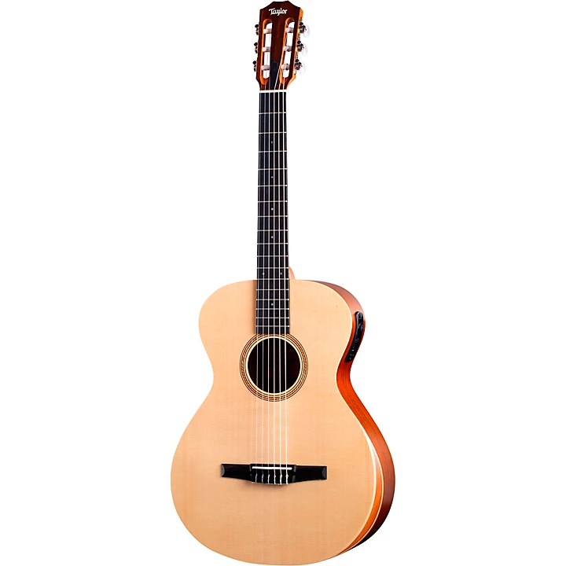

- Classical Guitars
The classical guitar can play a wide range of types of music-from classical music to bossa nova and jazz.Dubbed a mini-orchestra, the classical guitar covers an impressive range of timbres.
 - Acoustic Guitars
The timbre of a guitar is determined by its body.Most people have never looked inside a guitar and may not realize it, but guitars are actually very cleverly designed.

- Electric Guitars
Even though electricity is used to amplify the volume, the body and neck are merely pieces of wood. These instruments come in unique shapes and colors.

- Bass Guitars
The bass guitar is fundamental instrument in most musical genres and bands. They can take on multiple different roles, but the key to a great bassist is consistency and timing. A bass' main function is to hold up the low-end in the mix and keep the band playing in a tight rhythmic pattern.

Bowed String Instruments
- Violins
Whether performing an elegant solo or being the heart of the orchestra, the violin is a "star" in the music world.

- Electric Violins
An electric violin is a violin equipped with an electronic output of its sound. The term most properly refers to an instrument intentionally made to be electrified with built-in pickups, usually with a solid body.

- Violas
The viola is a string instrument that is bowed, plucked, or played with varying techniques. Slightly larger than a violin, it has a lower and deeper sound.

- Cellos
The cello or violoncello is a bowed string instrument with four strings tuned in perfect fifths. The cello is used as a solo musical instrument, as well as in chamber music ensembles, string orchestras, as a member of the string section of symphony orchestras, and some rock bands. It is the second-largest bowed string instrument in the modern symphony orchestra, the double bass being the largest.

- Double Basses
The double bass, or contrabass as it is sometimes known, is the largest and lowest pitched bowed stringed instrument in a modern classical symphony orchestra. Together with violins, violas and cellos, the double bass is part of the string section and supports the orchestra with its warm, deep tone - but is also a popular instrument in jazz, blues, rock and roll, country, bluegrass, tango and folk music.